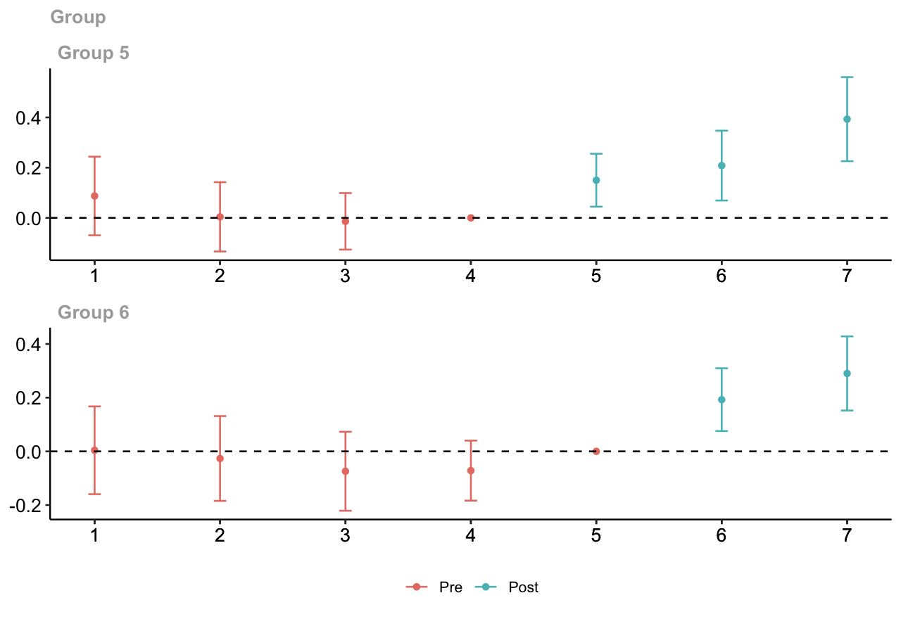

Hands-on R Lab
October 22, 2026 | 1:00-1:30 PM Eastern
What is the effect of district adoption of a gifted education program on district-level achievement? These are simulated teaching examples, not estimates from the actual gifted education study.
Download the R script · Download the R Markdown · Data and codebook
1. Set Up R
For help installing R and RStudio, see Posit’s setup page. R performs calculations. RStudio provides an interface for code and results.
| Package | Purpose |
|---|---|
| readr | Import CSVs with read_csv(). |
| dplyr | Select observations, create variables, and summarize data. |
| etwfe | Estimate extended TWFE models and summarize their treatment effects. |
| fixest | Estimate regressions and fixed-effects models with feols(). |
| did | Estimate and aggregate group-by-time treatment effects. |
fixest is the package and feols() is its linear-regression function. See the function documentation.
# Install once.
install.packages(c("readr", "dplyr", "fixest", "did", "etwfe"))# Load for each session.
library(readr)
library(dplyr)
library(fixest)
library(did)
library(etwfe)2. Load the Data
Both datasets contain 832 simulated districts representing Texas, each observed over seven years. Each row represents one district in one year. Both panels are balanced and treatment is assigned at the district level.
The six variables are
| Variable | Meaning |
|---|---|
district_id |
Identifies each district |
year |
Observation year, from 1 to 7 |
treatment_start_year |
First treatment year, with 0 for never-treated districts |
outcome_std |
Achievement outcome measured in SD units |
treated_ever |
Identifies districts that eventually receive treatment |
treated |
Identifies observations when treatment is active |
Place the downloaded CSV files in your R project folder
# Import the common-adoption and staggered-adoption panels
simple <- read_csv("simple_did_district.csv")
staggered <- read_csv("staggered_did_district.csv")read_csv() comes from readr. We use outcome_std, measured in standard-deviation (SD) units, so estimated treatment effects are also expressed in SD units.
3. Understand the Treatment Variables
We use functions from dplyr, part of the tidyverse, to summarize the treatment groups. See the introduction to dplyr for more information.
# Count each district once, rather than counting its seven observations
# A treatment start year of 0 identifies never-treated districts
simple %>%
distinct(district_id, treatment_start_year) %>%
count(treatment_start_year, name = "districts")#> # A tibble: 2 × 2
#> treatment_start_year districts
#> <dbl> <int>
#> 1 0 416
#> 2 5 416staggered %>%
distinct(district_id, treatment_start_year) %>%
count(treatment_start_year, name = "districts")#> # A tibble: 3 × 2
#> treatment_start_year districts
#> <dbl> <int>
#> 1 0 416
#> 2 5 208
#> 3 6 208The Texas traditional panel has 416 adopting and 416 never-treated districts. The staggered panel has 208 Year 5 adopters, 208 Year 6 adopters, and 416 never-treated districts.
Treatment Group Membership and Active Treatment
Our dataset records each district’s first treatment year in treatment_start_year. A value of 5 or 6 tells us when the district adopts the policy, while 0 means it never adopts. Both files already contain the following indicators
| Variable | Meaning | Used in this lab |
|---|---|---|
treated_ever |
1 in every year for a district that eventually adopts, and 0 for a never-treated district | The traditional DID event study |
treated |
1 from the district’s adoption year onward, and 0 otherwise | The two-by-two DID and TWFE regressions |
For a district that adopts in Year 5
| Year | treatment_start_year |
treated_ever |
treated |
|---|---|---|---|
| 4 | 5 | 1 | 0 |
| 5 | 5 | 1 | 1 |
| 6 | 5 | 1 | 1 |
The distinction is between belonging to the treatment group and currently receiving treatment. For never-treated districts, both indicators equal 0 in every year.
The CSA function att_gt() uses treatment_start_year directly to identify adoption groups. It does not require either of these indicators as an input.
The coding rule for treated_ever is whether the start year is greater than 0. For treated, that condition must hold and the observation year must be at least the start year. Never-treated districts remain 0 even though their start-year code is 0.
4. Estimate the Classic Two-by-Two DID
Use Year 4, immediately before adoption, and Year 5, the first treated year. We use the same equation as the slides
is the treated group, the control group, and a group mean. Under parallel trends and no anticipation, the control change supplies the untreated change for the treated group. Estimate the contrast using the slides’ TWFE equation
# Keep the year before adoption and the first treated year
two_period <- simple %>%
filter(year %in% c(4, 5))
# Estimate DID with district and year fixed effects
# Cluster standard errors by district
model_2x2 <- feols(
outcome_std ~ treated | district_id + year,
data = two_period,
vcov = ~ district_id
)
summary(model_2x2)#> OLS estimation, Dep. Var.: outcome_std
#> Observations: 1,664
#> Fixed-effects: district_id: 832, year: 2
#> Standard-errors: Clustered (district_id)
#> Estimate Std. Error t value Pr(>|t|)
#> treated 0.212487 0.030969 6.86138 1.3326e-11 ***
#> ---
#> Signif. codes: 0 '***' 0.001 '**' 0.01 '*' 0.05 '.' 0.1 ' ' 1
#> RMSE: 0.223049 Adj. R2: 0.888779
#> Within R2: 0.053677# The treated coefficient is the two-by-two DID estimate, about 0.2125 SDfilter() comes from dplyr and feols() comes from fixest.
| Equation | R variable | Meaning |
|---|---|---|
| outcome_std | District achievement outcome | |
| treated | 1 when treatment is active and 0 otherwise | |
| district_id | Identifies districts for district fixed effects | |
| year | Identifies years for year fixed effects | |
| Coefficient on treated | Estimated DID effect | |
| No input variable | Regression error |
Variables after the vertical bar specify fixed effects, not ordinary numeric predictors. data selects the dataset. vcov = ~ district_id requests district-clustered standard errors. The coefficient on treated equals the two-by-two contrast. In this example, the estimated coefficient is 0.21 SD, meaning that achievement increased by 0.21 standard deviations more in treated districts than in never-treated districts between Years 4 and 5. Clustering allows outcomes from the same district to be related across years. The estimated coefficient is measured in SD units.
5. Estimate TWFE Using All Seven Years
We now use all seven years rather than only Years 4 and 5. The model specification stays the same, but we change the dataset from two_period to simple. The coefficient compares the treated group’s change from its average outcome in Years 1-4 to its average outcome in Years 5-7 with the same change for never-treated districts. In this balanced common-adoption example, it summarizes the average post-treatment effect.
District effects account for persistent differences between districts. Year effects account for common shocks. The equation stays the same
# Use all seven years with the same fixed effects and clustering
model_twfe <- feols(
outcome_std ~ treated | district_id + year,
data = simple,
vcov = ~ district_id
)
summary(model_twfe)#> OLS estimation, Dep. Var.: outcome_std
#> Observations: 5,824
#> Fixed-effects: district_id: 832, year: 7
#> Standard-errors: Clustered (district_id)
#> Estimate Std. Error t value Pr(>|t|)
#> treated 0.227288 0.032668 6.9575 7.022e-12 ***
#> ---
#> Signif. codes: 0 '***' 0.001 '**' 0.01 '*' 0.05 '.' 0.1 ' ' 1
#> RMSE: 0.395699 Adj. R2: 0.814441
#> Within R2: 0.0198# The treated coefficient summarizes the effect across Years 5-7The time-constant treated_ever variable would be absorbed by district effects. Use treated, which switches on at adoption.
6. Estimate an Event Study
In an event study, we estimate a separate coefficient for each year relative to treatment, rather than one average post-treatment effect. This lets us examine differences in trends before treatment and how treatment effects evolve afterward.
The interaction equals 1 when a district belongs to the treated group and is observed at event time . In the R code, i(relative_year, treated_ever, ref = -1) creates these interactions.
Treatment begins in Year 5, so and event time is . Each coefficient shows how the difference between treated and never-treated districts in that year compares with their difference in Year 4, the reference year.
Create the Event-Time Variable
We subtract 5 from the observation year to express time relative to treatment.
| Study year | Calculation | relative_year | Meaning |
|---|---|---|---|
| 1 | -4 | Four years before treatment | |
| 2 | -3 | Three years before treatment | |
| 3 | -2 | Two years before treatment | |
| 4 | -1 | Reference year | |
| 5 | 0 | Treatment begins | |
| 6 | 1 | One year after treatment begins | |
| 7 | 2 | Two years after treatment begins |
# Event time 0 is Year 5, and event time -1 is Year 4
simple <- simple %>%
mutate(relative_year = year - 5)This adds relative_year without changing the existing variables. We use the same year index for both groups. Never-treated districts do not actually adopt in Year 5, but the shared index lets us compare both groups in the same years.
Estimate the Model
We still use feols() with district and year fixed effects. We replace the single treated indicator with i(relative_year, treated_ever, ref = -1).
relative_yearidentifies the year relative to adoptiontreated_everidentifies districts belonging to the treatment group, including before adoptionref = -1sets Year 4 as the reference, so its coefficient is not estimated separately
Together, these arguments allow a separate treated-group coefficient for each year other than the reference year.
# Estimate separate year-specific effects relative to Year 4
# treated_ever distinguishes adopters from never-treated districts
model_event <- feols(
outcome_std ~ i(relative_year, treated_ever, ref = -1) |
district_id + year,
data = simple,
vcov = ~ district_id
)
summary(model_event)#> OLS estimation, Dep. Var.: outcome_std
#> Observations: 5,824
#> Fixed-effects: district_id: 832, year: 7
#> Standard-errors: Clustered (district_id)
#> Estimate Std. Error t value Pr(>|t|)
#> relative_year::-4:treated_ever -0.047562 0.046016 -1.03358 3.0163e-01
#> relative_year::-3:treated_ever -0.059430 0.040647 -1.46211 1.4409e-01
#> relative_year::-2:treated_ever -0.033870 0.033042 -1.02506 3.0563e-01
#> relative_year::0:treated_ever 0.212487 0.030982 6.85843 1.3589e-11 ***
#> relative_year::1:treated_ever 0.169008 0.040990 4.12321 4.1115e-05 ***
#> relative_year::2:treated_ever 0.194722 0.046268 4.20852 2.8505e-05 ***
#> ---
#> Signif. codes: 0 '***' 0.001 '**' 0.01 '*' 0.05 '.' 0.1 ' ' 1
#> RMSE: 0.395566 Adj. R2: 0.814379
#> Within R2: 0.020456# relative_year::1:treated_ever is the Year 6 effect, about 0.1690 SDInterpret the Coefficients
The coefficient for relative_year::1:treated_ever is 0.169 SD. Event time 1 corresponds to Year 6, one year after treatment began. Achievement increased by 0.169 standard deviations more in treated districts than in never-treated districts between Years 4 and 6. This is not the additional change from Year 5 to Year 6. Every coefficient is compared with Year 4.
Pre-treatment coefficients describe changes in the treated-control gap before treatment. They help assess pre-trends but do not prove parallel trends. Under parallel trends and no anticipation, post-treatment coefficients estimate effects separately for Years 5, 6, and 7, rather than one average effect.
This example has one treatment start year. Next we consider districts adopting in different years and estimate effects separately for each cohort and study year.
7. Move to Staggered Adoption
Effects now depend on cohort and year
is the cohort first treated in . is the potential outcome when treatment starts in . is the outcome without treatment.
There are 208 Year 5 adopters, 208 Year 6 adopters, and 416 never-treated districts. The early group has three post-treatment years and the late group has two. A single TWFE coefficient can mix never-treated, not-yet-treated, and already-treated comparisons. Already-treated controls can be problematic when effects change over time.
8. Estimate and Summarize Treatment Effects
First, we estimate group-by-time ATTs. We then summarize those estimates in four ways, each answering a different question. These are not five separate models.
| Output | Question |
|---|---|
| 1. Group-by-time ATT | What is the effect for one adoption group in one year? |
| 2. Group average | What is the average effect for each group across its post-treatment years? |
| 3. Calendar summary | What is the average effect across groups already treated in the same year? |
| 4. Simple ATT | What is the overall weighted average across post-treatment group-time effects? |
| 5. Dynamic effect | How does the effect vary with time since treatment began? |
8.1 Group-by-Time ATTs
Use att_gt() from did, implementing Callaway and Sant’Anna (2021). We compare each cohort with never-treated districts
ATT(6,7) compares the Year 6 cohort’s change from Year 5 to Year 7 with the control group’s change over those same years.
# Make the bootstrap reproducible
set.seed(20261014)
# Estimate ATT(g,t) for each adoption group g and calendar year t
model_csa <- att_gt(
yname = "outcome_std",
tname = "year",
idname = "district_id",
gname = "treatment_start_year",
xformla = ~ 1,
data = staggered,
panel = TRUE,
control_group = "nevertreated",
base_period = "universal",
anticipation = 0,
bstrap = TRUE,
biters = 1000,
clustervars = "district_id",
cband = TRUE
)
summary(model_csa)#>
#> Call:
#> att_gt(yname = "outcome_std", tname = "year", idname = "district_id",
#> gname = "treatment_start_year", xformla = ~1, data = staggered,
#> panel = TRUE, control_group = "nevertreated", anticipation = 0,
#> bstrap = TRUE, cband = TRUE, biters = 1000, clustervars = "district_id",
#> base_period = "universal")
#>
#> Reference: Callaway, Brantly and Pedro H.C. Sant'Anna. "Difference-in-Differences with Multiple Time Periods." Journal of Econometrics, Vol. 225, No. 2, pp. 200-230, 2021. <https://doi.org/10.1016/j.jeconom.2020.12.001>, <https://arxiv.org/abs/1803.09015>
#>
#> Group-Time Average Treatment Effects:
#> Group Time ATT(g,t) Std. Error [95% Simult. Conf. Band]
#> 5 1 0.0872 0.0557 -0.0694 0.2437
#> 5 2 0.0040 0.0491 -0.1340 0.1420
#> 5 3 -0.0138 0.0400 -0.1264 0.0988
#> 5 4 0.0000 NA NA NA
#> 5 5 0.1501 0.0375 0.0447 0.2554 *
#> 5 6 0.2082 0.0495 0.0691 0.3474 *
#> 5 7 0.3932 0.0596 0.2258 0.5607 *
#> 6 1 0.0040 0.0581 -0.1595 0.1675
#> 6 2 -0.0265 0.0562 -0.1845 0.1314
#> 6 3 -0.0741 0.0523 -0.2213 0.0730
#> 6 4 -0.0717 0.0397 -0.1835 0.0400
#> 6 5 0.0000 NA NA NA
#> 6 6 0.1926 0.0416 0.0757 0.3095 *
#> 6 7 0.2903 0.0491 0.1522 0.4283 *
#> ---
#> Signif. codes: `*' confidence band does not cover 0
#>
#> P-value for pre-test of parallel trends assumption: 0.23306
#> Control Group: Never Treated, Anticipation Periods: 0
#> Estimation Method: Doubly Robust# Group 5, Time 5 is ATT(5,5), about 0.1501 SD
# This is a group-by-time effect, not an average across post-treatment years| Argument | Meaning and reason for our choice |
|---|---|
| yname = “outcome_std” | Outcome in SD units |
| tname = “year” | Study year , not time since adoption |
| idname = “district_id” | Follows district across years |
| gname = “treatment_start_year” | Cohort , with 0 for never treated, not a binary indicator |
| xformla = ~ 1 | Intercept-only covariate formula, meaning no adjustment covariates |
| data = staggered | Selects the staggered-adoption dataset |
| panel = TRUE | Follows the same districts over time. FALSE is for repeated cross sections |
| control_group = “nevertreated” | Uses never-treated districts as comparison group |
| base_period = “universal” | Fixed reference year within each cohort |
| anticipation = 0 | No treatment effects before adoption |
| bstrap = TRUE | Multiplier bootstrap inference |
| biters = 1000 | 1,000 bootstrap iterations |
| clustervars = “district_id” | Allows dependence within districts over time |
| cband = TRUE | Simultaneous confidence bands across group-time estimates |
In xformla = ~ 1, the 1 represents an intercept, not one covariate. With covariates, a formula could be ~ poverty_rate + enrollment, provided those columns existed. Our example has no covariates.
The alternative control_group = "notyettreated" includes never-treated districts and eligible districts that have not yet adopted. With no anticipation, Year 6 adopters can contribute as controls in Year 5, but not once treated in Year 6.
Inference
Group identifies adoption cohort and Time identifies outcome year. Group 5 and Time 7 identify the effect in Year 7 for Year 5 adopters. Pre-treatment comparisons are diagnostics, not effects of an already-active treatment.
Bootstrap, Seed, and Clustering
We use the multiplier bootstrap to approximate sampling uncertainty. It randomly reweights district-level influence contributions across iterations, rather than generating a new outcome dataset. We cluster by district because treatment is assigned to districts and their repeated observations may be dependent.
set.seed(20261014) fixes the random-number sequence, making the bootstrap reproducible with the same data, code, package versions, and computing setup. A different seed can change bootstrap standard errors and confidence bands slightly, but not the group-time point estimates for the same data and model settings.
biters = 1000 requests 1,000 iterations. cband = TRUE requests simultaneous confidence bands that target coverage of the group-time effects together at the default 95% level, rather than separate 95% pointwise intervals. cband = FALSE requests pointwise intervals. Simultaneous bands require bstrap = TRUE.
Assess Parallel Trends
Parallel trends means that, without treatment, treated and comparison districts would have experienced the same average change in outcomes. Their outcome levels do not need to be equal.
We cannot directly test what would have happened after treatment. We can, however, examine whether the groups changed similarly before treatment.
Examine the Pre-Treatment Estimates
# Examine pre-treatment comparisons and their simultaneous confidence bands
ggdid(model_csa)
plot of chunk pretrends-plot
The plot shows estimates for each adoption group over time. Before treatment, estimates near zero indicate that the treated-control gap was similar to its value in the reference year. Consider both the estimates and their confidence bands. The reference-period value is fixed at zero, not evidence that trends were parallel.
Our model uses base_period = "universal" with no anticipation.
- Year 5 adopters use Year 4 as the reference
- Year 6 adopters use Year 5 as the reference
The alternative, "varying", compares consecutive pre-treatment years. Both settings produce the same post-treatment ATT estimates. A complete set of short- and long-difference restrictions expresses the same joint null hypothesis, although individual estimates and their significance can differ.
Read the Pre-Test
# Show the model results, including the joint pre-trends test
summary(model_csa)#>
#> Call:
#> att_gt(yname = "outcome_std", tname = "year", idname = "district_id",
#> gname = "treatment_start_year", xformla = ~1, data = staggered,
#> panel = TRUE, control_group = "nevertreated", anticipation = 0,
#> bstrap = TRUE, cband = TRUE, biters = 1000, clustervars = "district_id",
#> base_period = "universal")
#>
#> Reference: Callaway, Brantly and Pedro H.C. Sant'Anna. "Difference-in-Differences with Multiple Time Periods." Journal of Econometrics, Vol. 225, No. 2, pp. 200-230, 2021. <https://doi.org/10.1016/j.jeconom.2020.12.001>, <https://arxiv.org/abs/1803.09015>
#>
#> Group-Time Average Treatment Effects:
#> Group Time ATT(g,t) Std. Error [95% Simult. Conf. Band]
#> 5 1 0.0872 0.0557 -0.0694 0.2437
#> 5 2 0.0040 0.0491 -0.1340 0.1420
#> 5 3 -0.0138 0.0400 -0.1264 0.0988
#> 5 4 0.0000 NA NA NA
#> 5 5 0.1501 0.0375 0.0447 0.2554 *
#> 5 6 0.2082 0.0495 0.0691 0.3474 *
#> 5 7 0.3932 0.0596 0.2258 0.5607 *
#> 6 1 0.0040 0.0581 -0.1595 0.1675
#> 6 2 -0.0265 0.0562 -0.1845 0.1314
#> 6 3 -0.0741 0.0523 -0.2213 0.0730
#> 6 4 -0.0717 0.0397 -0.1835 0.0400
#> 6 5 0.0000 NA NA NA
#> 6 6 0.1926 0.0416 0.0757 0.3095 *
#> 6 7 0.2903 0.0491 0.1522 0.4283 *
#> ---
#> Signif. codes: `*' confidence band does not cover 0
#>
#> P-value for pre-test of parallel trends assumption: 0.23306
#> Control Group: Never Treated, Anticipation Periods: 0
#> Estimation Method: Doubly Robust# Extract its p-value; a large value does not prove parallel trends
model_csa$Wpval#> [,1]
#> [1,] 0.23306Look for P-value for pre-test of parallel trends assumption in the summary. The joint Wald test checks whether the non-normalized pre-treatment comparisons are jointly zero.
- A small p-value suggests differences in pre-treatment trends
- A large p-value means we did not detect such differences, not that parallel trends is proven
In this example, the p-value is 0.233. At the 5% level, we do not reject the joint pre-treatment restrictions.
Consider the plot, uncertainty, and study design together, not the p-value alone. See the pre-testing guide.
8.2 Group Averages
A group average summarizes one adoption group’s effects across its post-treatment years.
Here is the first treatment year, is the outcome year, and is the last year. counts the group’s post-treatment years. Hats indicate estimates, not known effects. Each year within a group receives equal weight in this balanced panel.
Average Across Each Group’s Post-Treatment Years
The Year 5 group contributes post-treatment years, Years 5, 6, and 7, so each year receives weight . The Year 6 group contributes post-treatment years, Years 6 and 7, so each year receives weight .
For Group 5, the included years are .
For Group 6, the included years are .
Here is the weight on year within group . The weights sum to one within each group.
# Average post-treatment effects within each adoption group
group_att <- aggte(model_csa, type = "group")
summary(group_att)#>
#> Call:
#> aggte(MP = model_csa, type = "group")
#>
#> Reference: Callaway, Brantly and Pedro H.C. Sant'Anna. "Difference-in-Differences with Multiple Time Periods." Journal of Econometrics, Vol. 225, No. 2, pp. 200-230, 2021. <https://doi.org/10.1016/j.jeconom.2020.12.001>, <https://arxiv.org/abs/1803.09015>
#>
#>
#> Overall summary of ATT's based on group/cohort aggregation:
#> ATT Std. Error [ 95% Conf. Int.]
#> 0.246 0.0307 0.1858 0.3062 *
#>
#>
#> Group Effects:
#> Group Estimate Std. Error [95% Simult. Conf. Band]
#> 5 0.2505 0.0408 0.1594 0.3416 *
#> 6 0.2414 0.0413 0.1493 0.3335 *
#> ---
#> Signif. codes: `*' confidence band does not cover 0
#>
#> Control Group: Never Treated, Anticipation Periods: 0
#> Estimation Method: Doubly Robust# Group 5 averages ATT(5,5), ATT(5,6), and ATT(5,7), about 0.2505 SD
# Group 6 averages ATT(6,6) and ATT(6,7), about 0.2414 SD
# The overall group average weights these by cohort size, about 0.2460 SDaggte() takes the fitted model_csa object. type = "group" requests the group averages. We extract the five estimated post-treatment effects to show the arithmetic.
# Collect each group-by-time estimate and its bootstrap standard error
# Use the model's critical value for 95% simultaneous confidence bounds
post_att <- data.frame(
group = model_csa$group,
year = model_csa$t,
estimate = model_csa$att,
SE = model_csa$se,
lower_95_sim = model_csa$att - model_csa$c * model_csa$se,
upper_95_sim = model_csa$att + model_csa$c * model_csa$se
) %>%
filter(year >= group) %>%
arrange(group, year) %>%
mutate(`ATT(g,t)` = paste0("ATT(", group, ",", year, ")"), .before = group)
# Show post-treatment cells, rounding only the displayed table
post_att %>%
mutate(across(c(estimate, SE, lower_95_sim, upper_95_sim), ~ round(.x, 4)))#> ATT(g,t) group year estimate SE lower_95_sim upper_95_sim
#> 1 ATT(5,5) 5 5 0.1501 0.0375 0.0447 0.2554
#> 2 ATT(5,6) 5 6 0.2082 0.0495 0.0691 0.3474
#> 3 ATT(5,7) 5 7 0.3932 0.0596 0.2258 0.5607
#> 4 ATT(6,6) 6 6 0.1926 0.0416 0.0757 0.3095
#> 5 ATT(6,7) 6 7 0.2903 0.0491 0.1522 0.4283# Group 5, Year 5 is ATT(5,5), about 0.1501 SD
# SE describes uncertainty, and the last two columns give the band boundslower_95_sim and upper_95_sim are the 95% simultaneous confidence bounds reported by summary(model_csa). They use the fitted model’s critical value, not 1.96. We retain the model’s simultaneous band when displaying only the post-treatment rows. Estimates, standard errors, and bounds are in SD units.
Substitute the Estimated Effects
The table above provides the five post-treatment group-time estimates. We now combine these estimates to calculate each group’s average treatment effect.
All results are in SD units. We show seven decimals in the next arithmetic steps to avoid ambiguity from rounding. Intermediate sums add the displayed inputs. Final estimates use full precision and are reported to four decimals.
Substituting the ATT values and their weights gives
Overall Group Average
counts districts in adoption group , not rows. We have . Each group receives weight .
This overall result averages the group averages, rather than weighting all five cells equally.
8.3 Calendar Summaries
A calendar summary combines effects across groups already treated in the same study year.
is the number of districts in group . The index runs over adoption groups already treated by year . The denominator counts their districts. We average effects only for groups already treated in that year. Never-treated districts provide the comparison used to estimate those effects.
Calculate the Weights
| Year | Treated groups | Denominator | Weight per included group |
|---|---|---|---|
| 5 | Group 5 | ||
| 6 | Groups 5 and 6 | ||
| 7 | Groups 5 and 6 |
The weight on is the coefficient in the calendar formula.
The sum includes adoption groups already treated by year . With , substitute and directly.
Year 5
Weight on
Year 6
Weight on
Weight on
Year 7
Weight on
Weight on
Only the early group contributes in Year 5. Both groups contribute in Years 6 and 7. Calendar time means the same observation year, not the same time since adoption.
# Average effects for groups already treated in the same calendar year
calendar_att <- aggte(model_csa, type = "calendar")
summary(calendar_att)#>
#> Call:
#> aggte(MP = model_csa, type = "calendar")
#>
#> Reference: Callaway, Brantly and Pedro H.C. Sant'Anna. "Difference-in-Differences with Multiple Time Periods." Journal of Econometrics, Vol. 225, No. 2, pp. 200-230, 2021. <https://doi.org/10.1016/j.jeconom.2020.12.001>, <https://arxiv.org/abs/1803.09015>
#>
#>
#> Overall summary of ATT's based on calendar time aggregation:
#> ATT Std. Error [ 95% Conf. Int.]
#> 0.2308 0.0317 0.1686 0.2929 *
#>
#>
#> Time Effects:
#> Time Estimate Std. Error [95% Simult. Conf. Band]
#> 5 0.1501 0.0375 0.0637 0.2365 *
#> 6 0.2004 0.0341 0.1218 0.2790 *
#> 7 0.3418 0.0411 0.2470 0.4365 *
#> ---
#> Signif. codes: `*' confidence band does not cover 0
#>
#> Control Group: Never Treated, Anticipation Periods: 0
#> Estimation Method: Doubly Robust# Year 5 uses Group 5 only, about 0.1501 SD
# Years 6 and 7 combine both groups, about 0.2004 and 0.3418 SD
# The overall calendar average weights these three years equallytype = "calendar" requests a separate summary for each post-treatment calendar year.
Substitute the Estimated Effects
Group-time ATT values by calendar year
Use the same group-time estimates as in Section 8.2, arranged by outcome year. With denoting the never-treated districts, Group 5 uses Year 4 as its reference and Group 6 uses Year 5. Displayed estimates use four decimals and aggregation uses unrounded values.
Year 5
Year 6
Year 7
Overall Calendar Average
The overall result gives equal weight to each included post-treatment calendar year. There are three such years, so each year receives weight .
8.4 Simple ATT
Simple ATT combines all post-treatment group-time effects with cell weights proportional to cohort size.
counts districts in adoption group , and counts group ’s post-treatment years. The sums include treated cohorts only. This formula applies to our balanced panel without sampling weights.
Calculate the Denominator and Weights
The Year 5 group contributes treated district-year observations. The Year 6 group contributes .
Each of our five cells has the same cohort size, so each receives weight
| Group | Year | Cell weight |
|---|---|---|
| 5 | 5 | |
| 5 | 6 | |
| 5 | 7 | |
| 6 | 6 | |
| 6 | 7 |
# Combine all post-treatment group-time effects using cohort-size weights
overall_csa <- aggte(model_csa, type = "simple")
summary(overall_csa)#>
#> Call:
#> aggte(MP = model_csa, type = "simple")
#>
#> Reference: Callaway, Brantly and Pedro H.C. Sant'Anna. "Difference-in-Differences with Multiple Time Periods." Journal of Econometrics, Vol. 225, No. 2, pp. 200-230, 2021. <https://doi.org/10.1016/j.jeconom.2020.12.001>, <https://arxiv.org/abs/1803.09015>
#>
#>
#> ATT Std. Error [ 95% Conf. Int.]
#> 0.2469 0.0311 0.1859 0.3079 *
#>
#>
#> ---
#> Signif. codes: `*' confidence band does not cover 0
#>
#> Control Group: Never Treated, Anticipation Periods: 0
#> Estimation Method: Doubly Robust# Each of the five cells has weight 0.20 here
# Simple ATT is approximately 0.2469 SDtype = "simple" selects the cell-weighted overall average.
Substitute the Estimated Effects
The early group receives total weight and the late group receives . This differs from the overall group average, which gives each group weight . The calendar overall average instead gives each calendar year equal weight. These summaries can differ because they answer different questions.
Never-treated districts supply the comparison but receive no treatment-effect weight. Do not average the standard errors. The package accounts for joint uncertainty. See the aggte() documentation.
8.5 Dynamic Effects
Dynamic aggregation averages effects across groups at the same time since adoption, rather than the same calendar year. Let denote event time, the same concept as in the earlier event-study example. Event time 0 is the first treated year.
For a post-treatment event time , let contain the adoption groups observed at that event time. The weights are proportional to their district counts.
Identify the Comparisons and Weights
| Event time | Meaning | Group-time effects | Weights |
|---|---|---|---|
| 0 | First treated year | ATT(5,5) and ATT(6,6) | each |
| 1 | One year after adoption | ATT(5,6) and ATT(6,7) | each |
| 2 | Two years after adoption | ATT(5,7) only |
For example, the first-year average combines the early group’s effect in Year 5 with the late group’s effect in Year 6.
# Average across groups at the same time since treatment began
dynamic_att <- aggte(model_csa, type = "dynamic")
summary(dynamic_att)#>
#> Call:
#> aggte(MP = model_csa, type = "dynamic")
#>
#> Reference: Callaway, Brantly and Pedro H.C. Sant'Anna. "Difference-in-Differences with Multiple Time Periods." Journal of Econometrics, Vol. 225, No. 2, pp. 200-230, 2021. <https://doi.org/10.1016/j.jeconom.2020.12.001>, <https://arxiv.org/abs/1803.09015>
#>
#>
#> Overall summary of ATT's based on event-study/dynamic aggregation:
#> ATT Std. Error [ 95% Conf. Int.]
#> 0.2713 0.0338 0.205 0.3376 *
#>
#>
#> Dynamic Effects:
#> Event time Estimate Std. Error [95% Simult. Conf. Band]
#> -5 0.0040 0.0563 -0.1460 0.1541
#> -4 0.0303 0.0416 -0.0806 0.1412
#> -3 -0.0351 0.0360 -0.1309 0.0608
#> -2 -0.0428 0.0276 -0.1162 0.0307
#> -1 0.0000 NA NA NA
#> 0 0.1713 0.0272 0.0990 0.2437 *
#> 1 0.2493 0.0364 0.1523 0.3462 *
#> 2 0.3932 0.0593 0.2354 0.5511 *
#> ---
#> Signif. codes: `*' confidence band does not cover 0
#>
#> Control Group: Never Treated, Anticipation Periods: 0
#> Estimation Method: Doubly Robust# Event time 0 combines ATT(5,5) and ATT(6,6), about 0.1713 SD
# Event time 1 combines ATT(5,6) and ATT(6,7), about 0.2493 SD
# Event time 2 uses ATT(5,7) only, about 0.3932 SD
# The overall dynamic average is about 0.2713 SDtype = "dynamic" requests estimates by event time. The default output also includes pre-treatment comparisons. We calculate the three post-treatment averages below.
Substitute the Estimated Effects
The estimate at event time 2 comes only from Group 5 because our data end in Year 7. Changes across event times can therefore reflect both time since adoption and which groups contribute. For a comparison with both groups at every event time, focus on 0 and 1. The balance_e option can restrict contributing cohorts when a balanced event-time composition is needed.
Overall Dynamic Average
The overall dynamic result averages the included post-treatment event-time effects, including event time 0. Here it gives equal weight to event times 0, 1, and 2.
This is not Simple ATT. Averaging event-time summaries gives different total weights to the five group-time cells. See the aggregation documentation.
9. Extended Two-Way Fixed Effects
Ordinary TWFE estimates one treatment coefficient. Extended TWFE allows the effect to differ across adoption groups and years. Our staggered dataset has five post-treatment group-time effects.
We first show a model with only post-treatment interactions. We then include pre-treatment interactions and use never-treated districts as the comparison, matching the comparison group in our CSA analysis. These specifications are not identical.
9.1 Allow Effects to Differ Across Groups and Years
The ordinary TWFE equation is
Replace its single treatment coefficient with five cohort-by-year interactions.
| Term | Meaning |
|---|---|
| and | Indicators for districts adopting in Year 5 or Year 6 |
| Indicator that the observation is in calendar year | |
| District fixed effect | |
| Year fixed effect | |
| Coefficient for adoption group in year | |
| Regression error |
For example, equals 1 for Year 5 adopters observed in Year 6. Under no anticipation, parallel trends, and the model’s untreated-outcome restrictions, its coefficient identifies ATT(5,6).
This model fits a common untreated time pattern using untreated observations. It does not estimate separate pre-treatment cohort-by-year coefficients.
# Estimate five post-treatment effects with district and year fixed effects
# Use never-treated and not-yet-treated observations as controls
model_etwfe_post <- etwfe(
fml = outcome_std ~ 0,
tvar = year,
gvar = treatment_start_year,
ivar = district_id,
gref = 0,
data = staggered,
cgroup = "notyet",
fe = "vs",
vcov = ~ district_id
)
# Summarize the post-treatment effects as a simple ATT
post_simple <- emfx(model_etwfe_post, type = "simple")
post_simple#>
#> .Dtreat Estimate Std. Error z Pr(>|z|) S 2.5 % 97.5 %
#> TRUE 0.245 0.0316 7.74 <0.001 46.5 0.183 0.307
#>
#> Term: .Dtreat
#> Type: response
#> Comparison: TRUE - FALSE# Summarize effects by time since adoption
emfx(model_etwfe_post, type = "event")#>
#> event Estimate Std. Error z Pr(>|z|) S 2.5 % 97.5 %
#> 0 0.171 0.0296 5.79 <0.001 27.1 0.113 0.230
#> 1 0.255 0.0372 6.86 <0.001 37.1 0.182 0.328
#> 2 0.371 0.0507 7.33 <0.001 41.9 0.272 0.470
#>
#> Term: .Dtreat
#> Type: response
#> Comparison: TRUE - FALSEWith cgroup = "notyet", pre-treatment effects are zero by construction. They are not estimated placebo effects and do not demonstrate parallel trends.
9.2 Use Never-Treated Districts as the Comparison
To compare with our CSA results, use cgroup = "never". This specification includes pre-treatment interactions as well as the five post-treatment effects. Each cohort’s last untreated year is omitted as its reference.
The omitted terms are and . Group 5 therefore uses Year 4 as its reference, and Group 6 uses Year 5. The five post-treatment coefficients estimate treatment effects. The other seven coefficients describe pre-treatment comparisons.
# Match the never-treated comparison group used in the CSA model
model_etwfe_never <- etwfe(
fml = outcome_std ~ 0,
tvar = year,
gvar = treatment_start_year,
ivar = district_id,
gref = 0,
data = staggered,
cgroup = "never",
fe = "vs",
vcov = ~ district_id
)| Argument | Meaning |
|---|---|
outcome_std ~ 0 |
Standardized outcome without covariates |
tvar = year |
Calendar year |
gvar = treatment_start_year |
Adoption cohort |
ivar = district_id |
Use district fixed effects alongside time effects |
gref = 0 |
Identify the never-treated cohort |
cgroup = "never" |
Use never-treated districts as controls |
fe = "vs" |
Use the package’s varying-slopes implementation of fixed effects |
vcov = ~ district_id |
Cluster standard errors by district |
Summarize the Effects
etwfe() fits the model. Its companion function emfx() summarizes the effects.
# Simple ATT combines post-treatment effects, about 0.2469 SD here
etwfe_simple <- emfx(model_etwfe_never, type = "simple")
etwfe_simple#>
#> .Dtreat Estimate Std. Error z Pr(>|z|) S 2.5 % 97.5 %
#> TRUE 0.247 0.032 7.72 <0.001 46.3 0.184 0.31
#>
#> Term: .Dtreat
#> Type: response
#> Comparison: TRUE - FALSE# Average within each adoption group
etwfe_group <- emfx(model_etwfe_never, type = "group")
etwfe_group#>
#> treatment_start_year Estimate Std. Error z Pr(>|z|) S 2.5 % 97.5 %
#> 5 0.251 0.0417 6.01 <0.001 29.0 0.169 0.332
#> 6 0.241 0.0413 5.84 <0.001 27.5 0.160 0.322
#>
#> Term: .Dtreat
#> Type: response
#> Comparison: TRUE - FALSE# Average within each calendar year
etwfe_calendar <- emfx(model_etwfe_never, type = "calendar")
etwfe_calendar#>
#> year Estimate Std. Error z Pr(>|z|) S 2.5 % 97.5 %
#> 5 0.150 0.0378 3.97 <0.001 13.8 0.076 0.224
#> 6 0.200 0.0353 5.69 <0.001 26.2 0.131 0.270
#> 7 0.342 0.0424 8.05 <0.001 50.1 0.259 0.425
#>
#> Term: .Dtreat
#> Type: response
#> Comparison: TRUE - FALSE# Average across groups at the same time since adoption
etwfe_event <- emfx(model_etwfe_never, type = "event")
etwfe_event#>
#> event Estimate Std. Error z Pr(>|z|) S 2.5 % 97.5 %
#> -5 0.00401 0.0574 0.0699 0.944 0.1 -0.1084 0.1165
#> -4 0.03032 0.0426 0.7118 0.477 1.1 -0.0532 0.1138
#> -3 -0.03507 0.0374 -0.9385 0.348 1.5 -0.1083 0.0382
#> -2 -0.04277 0.0273 -1.5695 0.117 3.1 -0.0962 0.0106
#> -1 0.00000 NA NA NA NA NA NA
#> 0 0.17134 0.0275 6.2303 <0.001 31.0 0.1174 0.2252
#> 1 0.24926 0.0367 6.7930 <0.001 36.4 0.1773 0.3212
#> 2 0.39324 0.0577 6.8147 <0.001 36.6 0.2801 0.5063
#>
#> Term: .Dtreat
#> Type: response
#> Comparison: TRUE - FALSEtype = "event" corresponds to type = "dynamic" in CSA’s aggte(). In the never-treated specification, this output also includes pre-treatment comparisons. They are diagnostics, not proof of parallel trends. Read Estimate as an effect in SD units. The output also reports standard errors and confidence intervals.
9.3 See the Regression Directly
We can estimate the expanded never-treated specification with feols(). Here we create the two cohort indicators in a separate analysis object.
# Identify adoption groups without changing the downloaded dataset
staggered_manual <- staggered %>%
mutate(
g5 = as.integer(treatment_start_year == 5),
g6 = as.integer(treatment_start_year == 6)
)
# Include each cohort's year interactions, omitting its last untreated year
model_manual <- feols(
outcome_std ~ i(year, g5, ref = 4) +
i(year, g6, ref = 5) | district_id + year,
data = staggered_manual,
vcov = ~ district_id
)
summary(model_manual)#> OLS estimation, Dep. Var.: outcome_std
#> Observations: 5,824
#> Fixed-effects: district_id: 832, year: 7
#> Standard-errors: Clustered (district_id)
#> Estimate Std. Error t value Pr(>|t|)
#> year::1:g5 0.087171 0.058061 1.501368 1.3364e-01
#> year::2:g5 0.003985 0.050393 0.079086 9.3698e-01
#> year::3:g5 -0.013818 0.040462 -0.341498 7.3281e-01
#> year::5:g5 0.150080 0.037819 3.968397 7.8610e-05 ***
#> year::6:g5 0.208241 0.048882 4.260035 2.2776e-05 ***
#> year::7:g5 0.393243 0.057705 6.814733 1.8137e-11 ***
#> year::1:g6 0.004010 0.057371 0.069895 9.4429e-01
#> year::2:g6 -0.026535 0.055253 -0.480242 6.3118e-01
#> year::3:g6 -0.074131 0.050413 -1.470466 1.4181e-01
#> year::4:g6 -0.071726 0.038824 -1.847438 6.5039e-02 .
#> year::6:g6 0.192595 0.041518 4.638830 4.0689e-06 ***
#> year::7:g6 0.290276 0.049595 5.852887 6.9494e-09 ***
#> ---
#> Signif. codes: 0 '***' 0.001 '**' 0.01 '*' 0.05 '.' 0.1 ' ' 1
#> RMSE: 0.395083 Adj. R2: 0.811005
#> Within R2: 0.028331# year::5:g5 is ATT(5,5), about 0.1501 SD
# The output includes both pre-treatment comparisons and treatment effects9.4 Compare the Results
First fit ordinary TWFE on the staggered panel so every method below uses the same observations. This is different from the common-adoption panel in Section 5.
# Estimate the single-coefficient TWFE model on the staggered panel
model_twfe_staggered <- feols(
outcome_std ~ treated | district_id + year,
data = staggered,
vcov = ~ district_id
)
summary(model_twfe_staggered)#> OLS estimation, Dep. Var.: outcome_std
#> Observations: 5,824
#> Fixed-effects: district_id: 832, year: 7
#> Standard-errors: Clustered (district_id)
#> Estimate Std. Error t value Pr(>|t|)
#> treated 0.231737 0.030258 7.65863 5.2249e-14 ***
#> ---
#> Signif. codes: 0 '***' 0.001 '**' 0.01 '*' 0.05 '.' 0.1 ' ' 1
#> RMSE: 0.396505 Adj. R2: 0.810062
#> Within R2: 0.02132Five Group-by-Time Effects
| Effect | Post-only ETWFE | Never-control ETWFE | CSA |
|---|---|---|---|
| ATT(5,5) | 0.1167 | 0.1501 | 0.1501 |
| ATT(5,6) | 0.1861 | 0.2082 | 0.2082 |
| ATT(5,7) | 0.3711 | 0.3932 | 0.3932 |
| ATT(6,6) | 0.2263 | 0.1926 | 0.1926 |
| ATT(6,7) | 0.3240 | 0.2903 | 0.2903 |
The post-only model pools information across untreated periods to fit the untreated time pattern. The never-control specification allows cohort-specific pre-treatment comparisons and uses each cohort’s last untreated year as the reference. Leaving out the pre-treatment interactions changes the model, not just the display.
Overall Estimates
| Model and summary | Estimate in SD units |
|---|---|
| Ordinary TWFE on the staggered panel | 0.2317 |
| Post-only ETWFE, simple ATT | 0.2448 |
| Never-control ETWFE, simple ATT | 0.2469 |
| CSA, simple ATT | 0.2469 |
In this balanced example without covariates, never-control ETWFE and CSA give the same five post-treatment point estimates and simple ATT. This is not a general guarantee for other datasets or specifications.
Their uncertainty calculations are different. Our CSA model uses a multiplier bootstrap and simultaneous bands for the group-time estimates. The ETWFE summaries use regression-based district-clustered inference with delta-method uncertainty from emfx(). Its reported intervals are pointwise, not the CSA simultaneous bands.
The never-control event-time estimates are 0.1713, 0.2493, and 0.3932 SD at event times 0, 1, and 2. Only Group 5 contributes at event time 2. Equal weighting of these three estimates gives 0.2713 SD, which differs from the simple ATT because the weights differ.
See the etwfe() documentation, emfx() documentation, and Wooldridge’s paper.
Questions and Discussion
1:30-2:00 PM Which units receive treatment? Which supply an untreated comparison? Which effect summary answers your question? What makes parallel trends plausible?
See Resources for further reading.
R Session and Package Versions
# Record R and package versions to help reproduce these results
sessionInfo()#> R version 4.4.2 (2024-10-31)
#> Platform: aarch64-apple-darwin20
#> Running under: macOS Sequoia 15.5
#>
#> Matrix products: default
#> BLAS: /Library/Frameworks/R.framework/Versions/4.4-arm64/Resources/lib/libRblas.0.dylib
#> LAPACK: /Library/Frameworks/R.framework/Versions/4.4-arm64/Resources/lib/libRlapack.dylib; LAPACK version 3.12.0
#>
#> locale:
#> [1] C.UTF-8/C.UTF-8/C.UTF-8/C/C.UTF-8/C.UTF-8
#>
#> time zone: America/New_York
#> tzcode source: internal
#>
#> attached base packages:
#> [1] stats graphics grDevices utils datasets methods base
#>
#> other attached packages:
#> [1] etwfe_0.5.0 did_2.1.2 fixest_0.12.1 dplyr_1.1.4 readr_2.1.5
#>
#> loaded via a namespace (and not attached):
#> [1] pROC_1.18.5 DRDID_1.2.0 sandwich_3.1-1
#> [4] rlang_1.2.0 magrittr_2.0.4 multcomp_1.4-26
#> [7] dreamerr_1.4.0 otel_0.2.0 compiler_4.4.2
#> [10] vctrs_0.6.5 reshape2_1.4.4 stringr_1.5.2
#> [13] pkgconfig_2.0.3 crayon_1.5.3 backports_1.5.0
#> [16] labeling_0.4.3 prodlim_2024.06.25 tzdb_0.5.0
#> [19] purrr_1.1.0 bit_4.6.0 xfun_0.61
#> [22] trust_0.1-8 recipes_1.1.0 stringmagic_1.1.2
#> [25] fastglm_0.0.3 uuid_1.2-1 broom_1.0.10
#> [28] parallel_4.4.2 R6_2.6.1 stringi_1.8.7
#> [31] RColorBrewer_1.1-3 parallelly_1.45.1 car_3.1-3
#> [34] rpart_4.1.24 lubridate_1.9.4 numDeriv_2016.8-1.1
#> [37] estimability_1.5.1 Rcpp_1.1.2 iterators_1.0.14
#> [40] BMisc_1.4.7 knitr_1.51 future.apply_1.11.3
#> [43] zoo_1.8-14 Matrix_1.7-1 splines_4.4.2
#> [46] nnet_7.3-19 timechange_0.3.0 tidyselect_1.2.1
#> [49] abind_1.4-8 timeDate_4041.110 codetools_0.2-20
#> [52] listenv_0.9.1 lattice_0.22-6 tibble_3.3.0
#> [55] plyr_1.8.9 withr_3.0.2 S7_0.2.1-1
#> [58] coda_0.19-4.1 evaluate_1.0.1 marginaleffects_0.32.0
#> [61] future_1.67.0 survival_3.7-0 pillar_1.11.1
#> [64] ggpubr_0.6.1 carData_3.0-5 checkmate_2.3.2
#> [67] foreach_1.5.2 stats4_4.4.2 insight_1.5.4
#> [70] generics_0.1.4 vroom_1.6.6 hms_1.1.3
#> [73] ggplot2_4.0.1 scales_1.4.0 globals_0.18.0
#> [76] xtable_1.8-4 class_7.3-22 glue_1.8.0
#> [79] emmeans_1.11.1 tools_4.4.2 data.table_1.16.4
#> [82] ModelMetrics_1.2.2.2 gower_1.0.2 ggsignif_0.6.4
#> [85] mvtnorm_1.3-3 grid_4.4.2 bigmemory_4.6.4
#> [88] tidyr_1.3.1 ipred_0.9-15 nlme_3.1-166
#> [91] Formula_1.2-5 cli_3.6.5 tinyplot_0.2.1
#> [94] bigmemory.sri_0.1.8 lava_1.8.0 gtable_0.3.6
#> [97] rstatix_0.7.2 digest_0.6.37 caret_7.0-1
#> [100] TH.data_1.1-2 farver_2.1.2 lifecycle_1.0.4
#> [103] hardhat_1.4.0 bit64_4.6.0-1 MASS_7.3-61